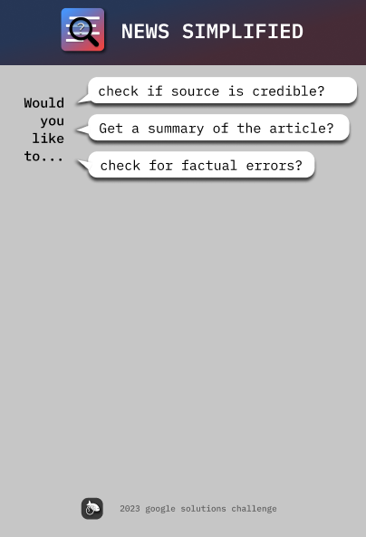

Intelligent Promotion Collector
This is a personal/on-going project, behind the scene there's a bot that automates the action of searching for good deals. And the UI feeds users with promotional items based on user’s preference. Famous ecommerce websites are supported: Amazon, Walmart, Wish...
Spring Boot is used as a backend web server, Angular is used to implement Web UI, Kotlin is used in Android development
A Neural Network is designed & implemented to best fit the user's preference, basic info, and the best under-promotion products
Technologies Used:
- Spring Boot
- Angular
- Kotlin - Android
- Neural Network
- PyTorch
- Node.JS
- Kafka MQ
- jQuery
Project is not yet public
Article Validation Chrome Extension
This is a submission for the Google Solution Challenge 2023. This extension allow user to fact-check/summarize/and determine whether the source is credible by visiting a site and activate the extension. GPT 3.5 is used to perform analysis on the article
Technologies Used:
- NodeJS
- HTML5
- jQuery
- Chrome Extension
Website ChatBot
This is a person project. This is a web-based chatbot that can be easily integrated into other websites.
Behind it there's a multi-layer Neural Network that accepts Bag-of-words and produces an appropriate output based on input A Flask web server can accept and feed user inquiries to the Neural Network, then returns the output to the client(website) The web ChatBot UI is easy to use, just like other social media, allowing live conversation between user & bot by querying the web server
Technologies Used:
- PyTorch
- Flask
- JavaScript
- Python
Project is not yet public
Travelling Guide
This is a project for OPPOHack2022, the Android app integrates the camera feature in the app. User may query the app to learn about certain attraction they are currently visiting.
The mobile app will query the backend Node.js server, which will search the relevant information based on user's location
The mobile app will display the information found on internet to user
Technologies Used:
- Kotlin - Android
- XML
- Node.js
- Google Map Platform